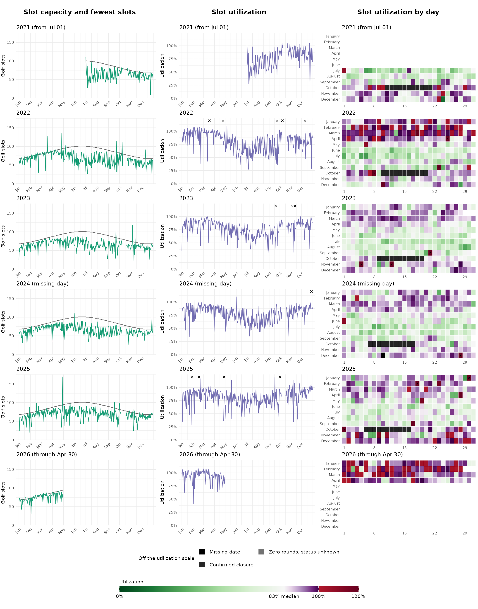
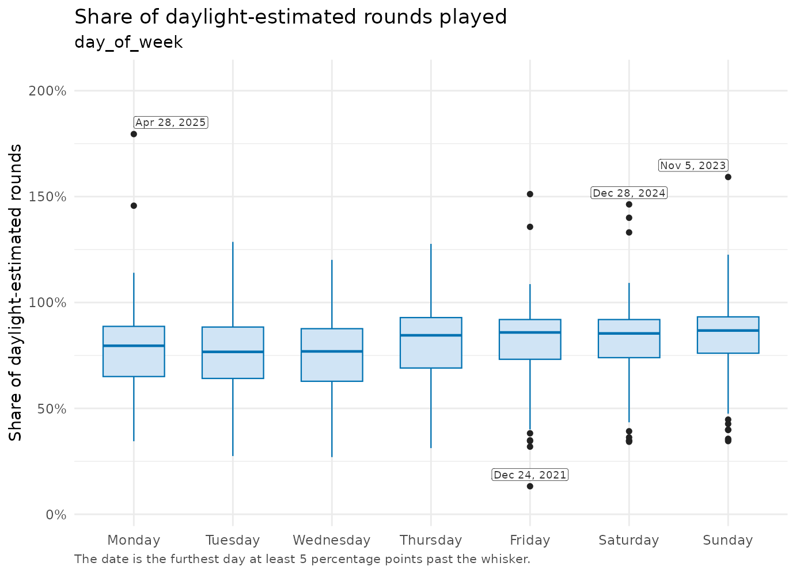

library(golfops)
sample <- dobson_operating_daily()
october_closures <- operating_calendar(
date = sample$date[sample$flag_zero_rounds & sample$month == "October"],
status = "closed"
)
other_zero <- sample$date[sample$flag_zero_rounds & sample$month != "October"]
other_zero_note <- if (length(other_zero) == 0) {
"Every zero-round day in this sample falls in October."
} else {
paste0(
"The other zero-round ",
if (length(other_zero) == 1) "day is " else "days are ",
paste(format(other_zero, "%Y-%m-%d"), collapse = ", "),
". Nobody played, so ",
if (length(other_zero) == 1) "that day is " else "those days are ",
"left out of the table too."
)
}October days with zero rounds are course closures. The operating sample has five Octobers, 2021 through 2025, and each has 11 consecutive zero-round days. The stretch starts one day earlier each year, from October 11–21 in 2021 to October 6–16 in 2025. The city file does not mark them closed. The charts below pass those dates as closed, and the utilization table leaves out every day with no play.
Golfers
A round in this file is one golfer. Gray is the city’s daylight estimate of how many golfers could play. Green is golfers who played. Purple is golfers divided by that estimate. This is not a count of tee times.
plot_capacity_demand(sample, calendar = october_closures, unit = "golfers")
Golf slots
A golf slot is one tee time. One, two, three, or four golfers can occupy it, and the slot is still used once. This file does not record how the golfers were grouped, so it does not say how many slots were used.
Slot capacity here is the daylight golfer estimate divided by 4. The green line is the fewest slots that could hold the golfers who played: those golfers divided by 4, rounded up. That is the count only if every group was a foursome. Any group of one, two, or three used an extra slot, and that extra is not in the file.
On a typical played day this sample has 266 golfers and a daylight estimate of 338 golfers. That estimate is about 84 foursome slots. The fewest slots for the golfers who played is about 67.
plot_capacity_demand(sample, calendar = october_closures, unit = "slots")
What the charts use
Each year is one row. The utilization axis runs from 0 to 120
percent, and a cross marks a day above 120 percent. The heatmap uses the
same utilization. Green is below the median played day, purple is above
it, and red is above 100 percent. The light band is the median. Black is
a missing date. October closures are marked closed and sit off that
scale. A zero-round day outside October stays off the scale as status
unknown. A typed opening time, closing time, and tee interval can count
real tee times, from course_capacity(). A tee sheet with
players per group can separate occupied slots from golfers, from
daily_utilization(). This extract has daily golfer counts,
not tee times.
Utilization by period
Utilization here is played rounds divided by the city’s daylight estimate, pooled across the operating sample. It is a ratio of sums. A higher share means the daylight estimate was fuller. Golfers per day is the other column: how many people played, without dividing by the length of the day. October closures are omitted. So is any other day with no play. The other zero-round day is 2022-11-12. Nobody played, so that day is left out of the table too.
The tables are sorted from the least full period to the most full. The charts keep calendar order and show each open day on its own.
open <- sample[sample$rounds_played > 0, ]
weekday <- summarize_golf_rounds(open, by = "weekday", duplicates = "drop_extra")
month <- summarize_golf_rounds(open, by = "month_of_year", duplicates = "drop_extra")
season <- summarize_golf_rounds(open, by = "season", duplicates = "drop_extra")| Period | Days | Golfers per day | Utilization | Days above daylight |
|---|---|---|---|---|
| July | 155 | 252 | 64% | 1 |
| June | 120 | 275 | 68% | 1 |
| August | 155 | 255 | 68% | 0 |
| September | 150 | 248 | 72% | 4 |
| May | 124 | 296 | 76% | 2 |
| November | 149 | 238 | 84% | 8 |
| December | 154 | 231 | 85% | 8 |
| January | 155 | 239 | 86% | 14 |
| October | 100 | 267 | 86% | 9 |
| April | 150 | 314 | 86% | 8 |
| February | 141 | 272 | 90% | 28 |
| March | 155 | 303 | 91% | 20 |
| Period | Days | Golfers per day | Utilization | Days above daylight |
|---|---|---|---|---|
| Wednesday | 242 | 249 | 74% | 10 |
| Tuesday | 241 | 251 | 75% | 13 |
| Monday | 242 | 255 | 76% | 15 |
| Thursday | 243 | 269 | 80% | 15 |
| Friday | 247 | 274 | 82% | 15 |
| Saturday | 246 | 275 | 82% | 17 |
| Sunday | 247 | 281 | 84% | 18 |
| Period | Days | Golfers per day | Utilization | Days above daylight |
|---|---|---|---|---|
| Summer | 430 | 259 | 67% | 2 |
| Fall | 399 | 249 | 80% | 21 |
| Spring | 429 | 305 | 85% | 30 |
| Winter | 450 | 247 | 87% | 50 |
June, July, and August are the low band. May and September are the shoulder. On days the course is open, October sits with November through April in the high band. February and March are the fullest. Those two months also have the most days above the daylight estimate, so the high end is cut off by the estimate.
Monday, Tuesday, and Wednesday sit a little below Thursday through Sunday. Friday is with the weekend. The gap across the week is smaller than the gap from summer to late winter.
Golfers per day follows a different order. April is the busiest played day. A summer day can have as many golfers as a winter day and still leave a larger share of the daylight estimate unused, because the estimate is longer in summer. The bands above follow utilization.
Share of daylight-estimated rounds is the golfers who played divided by the city’s daylight estimate for that same day. The city sets the estimate from the hours between sunrise and sunset. Eighty percent means eighty of every hundred estimated rounds were played. A day above one hundred percent ran past the estimate.
The box on each chart is the middle half of open days in that month or weekday. The line is the median day. Whiskers reach the furthest day still inside the usual spread of that middle half, one and a half times the height of the box. A dot is a day at least five percentage points past a whisker. The date names the furthest of those days. Days with no play are omitted, including the October closures. The extract has no tee time, so this chapter has no time-of-day chart.
plot_daylight_share(open, "month_of_year")
plot_daylight_share(open, "weekday")